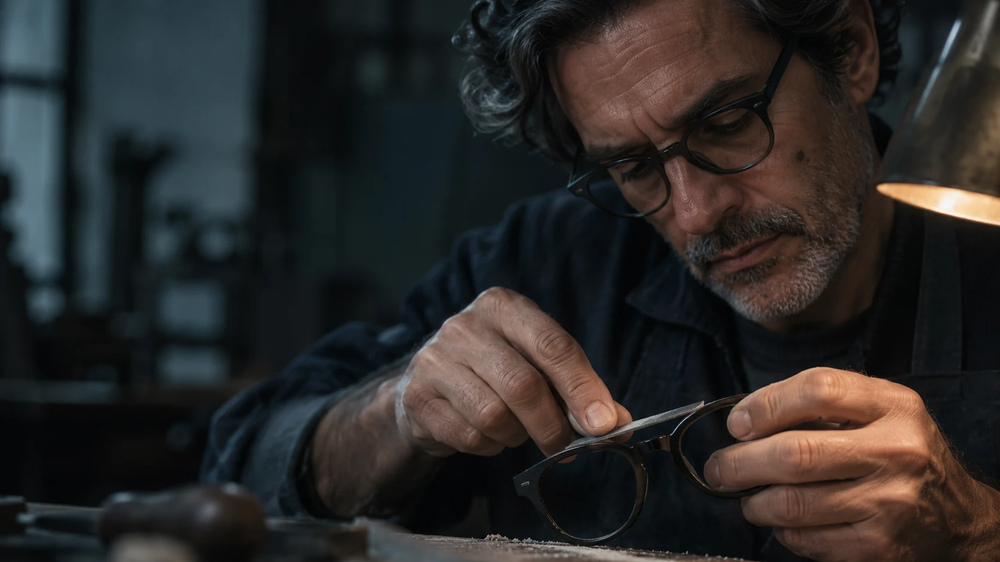
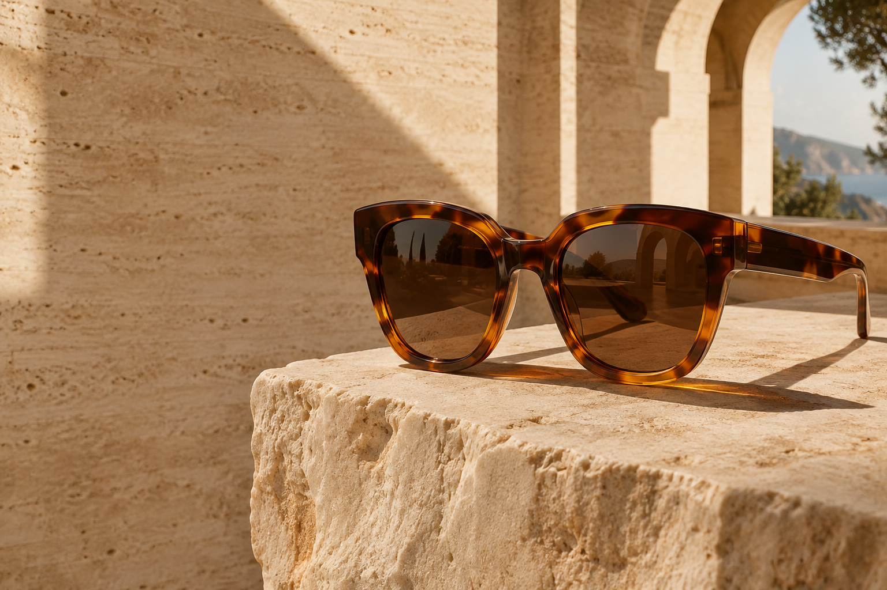
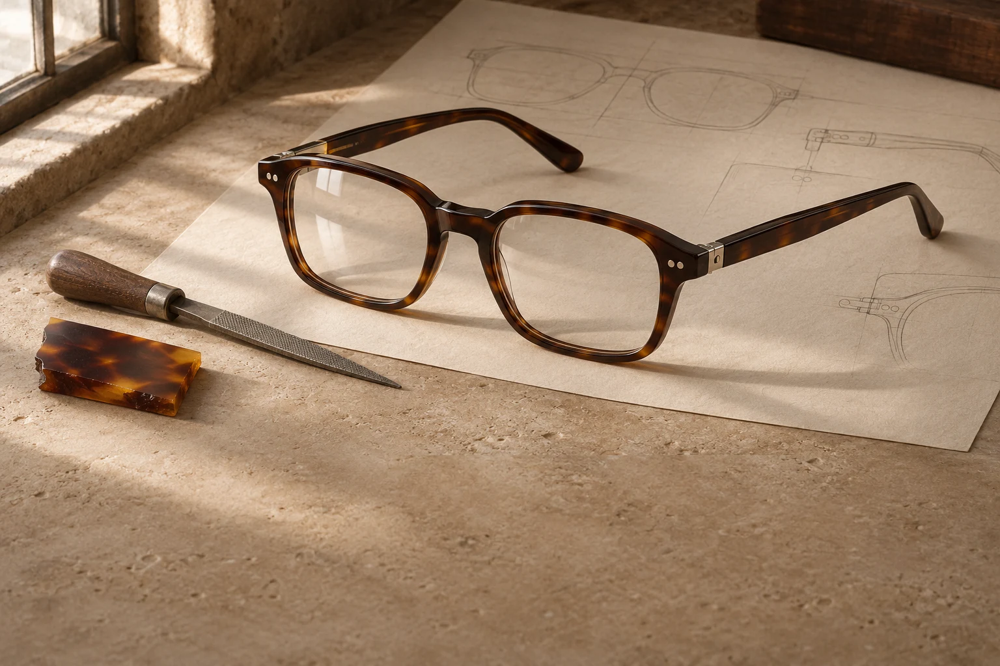

UNA CASA. UNA MANERA DE MIRAR.
El tiempo, la materia.
Y algo que solo
te pertenece a ti.
Una línea apenas más suave. Un puente que encuentra su equilibrio. El color que sientes propio.
Miscante explora la relación entre la forma y la identidad. Piezas para acompañar una mirada, no para imponerla.
Entrar al estudio personal →
LAS PIEZAS DE MISCANTE
La colección.
Explorar las formas →
UNA PIEZA CON TU FIRMA
Tu propia forma.
Crear mi montura →TE ACOMPAÑAMOS
Una buena elección.
Una larga historia.
Todo lo que necesitas saber para encontrar
y cuidar tu próxima montura.
¿Cómo elijo el tamaño de mi montura?
En cada ficha verás las medidas en milímetros: ancho de lente, puente y largo de patilla. Compáralas con las de unas gafas que ya te resulten cómodas. El ancho total y el ajuste en nariz también influyen.
¿Las monturas ópticas incluyen graduación?
Las monturas del catálogo no incluyen graduación. En el estudio de diseño personal puedes seleccionar cristales graduados y tratamientos, ver su precio estimado y adjuntar una receta. La graduación y el valor final requieren validación óptica.
¿Cómo cuido mis gafas?
Lávalas con agua tibia y jabón neutro, sécalas con microfibra y guárdalas en su estuche. Evita el calor del automóvil y los productos abrasivos.
Envíos, cambios y compras
Esta tienda es una demostración: no procesa pagos ni envía pedidos. El envío simulado cuesta $5.000 y es gratis desde $200.000. Las políticas comerciales definitivas se informarán antes de habilitar la venta real.